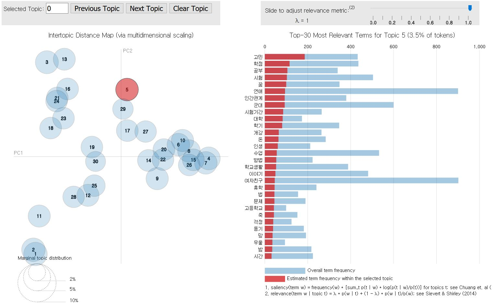
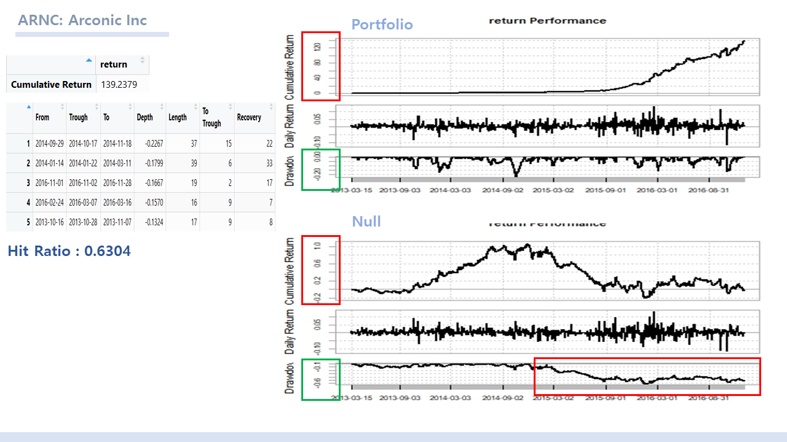

About
"To be a creative expert in Sociology"
A student who wants to become an expert in understanding people and society. I study sociology, data science, and user experience (UX) to understand and analyze individuals, groups, and social phenomena. I am also interested in deep understanding of related technologies.
Interest
AI including Deep Learning and ML, NLP, Social Network Analysis, Social Research
Skills
Python
R
mySQL
UCINET
SPSS
Educations
Sungkyunkwan University, Seoul, Korea
2012.3 - 2018.2
| Course Code | Course Name | Course Description | Credits/Hours | GPA |
|---|---|---|---|---|
| SOC2003 | Political Sociology | 3 | 4.0 | |
| SOC2005 | Sociology of Marriage and Family | 3 | 4.5 | |
| ISS3152 | Big Data: Technologies and Applications | 3 | Pass | |
| SOC2001 | Sociological Theory | 3 | 4.0 | |
| SOC2002 | Social Stratification | 3 | 4.5 | |
| SOC3014 | Sociology of Science | 3 | 4.0 | |
| ECO2001 | Principles of Economics 1 | 3 | 3.5 | |
| ECO2002 | Principles of Economics 2 | 3 | 4.5 | |
| SOC3012 | Sociology of Knowledge | 3 | 2.5 | |
| SOC3013 | Sociology of Environment | 3 | 3.5 | |
| SOC3004 | Sociology of Human Sexuality | 3 | 3.5 | |
| SOC2006 | Deviation and Crimes | 3 | 4.5 | |
| USS2002 | Principles of Statistical Analysis | 3 | 3.5 | |
| SOC3007 | Sociological Data Analysis | 3 | 4.5 |
| Course Code | Course Name | Course Description | Credits/Hours | GPA |
|---|---|---|---|---|
| CII3012 | Data Mining | 3 | 3.5 | |
| CII3015 | Social Informatics | 3 | 3.5 | |
| CII3024 | Artificial Intelligence | 3 | 4.0 | |
| SWE2015 | Data Structures | 3 | 3.0 | |
| CII2022 | Introduction to Programming | 3 | 4.5 | |
| CII2001 | Computational Thinking | 3 | 4.5 | |
| CII2002 | Design Thinking | 3 | 4.5 | |
| CII2003 | Informatics Foundation | 3 | 4.5 | |
| CII2004 | Data Analysis | 3 | 3.5 | |
| CII3018-01 | Informatics for Finance | 3 | 4.0 | |
| ICE3035-01 | Web Programming | 3 | 4.5 | |
| CII3013 | Data Visualization | 3 | 4.5 |
Electives
| Course Code | Course Name | Course Description | Credits/Hours | GPA |
|---|---|---|---|---|
| STA2017 | Matrix Algebra for Statistics | 3 | 3.0 | |
| STA2008 | Mathematics for Statistics | 3 | 3.5 |
Seoul National University Big data Engineering Course
2017.8.21 - 2017.9.15
learned hadoop/spark, machine learning, deep learning Course Description
Portfolio
Convergence Foundation Project
2017.4 - 2017.6
I have participated in a contest hosted by the Sungkyunkwan University Convergence-based Human Resource Development Team and have conducted projects to design problem solving products. Our team aimed to plan the service product to increase the expenditure of living-alones and X generation's on recration whose number are increasing. This is because the X generation is the first in Korea to have a tendency not to spare investment for its own values. Through compassionate research and interviews, we discovered that people in Generation X wanted to relate themselves to "young" culture. We designed a curating service that added the elements of community and game so that interaction between users could be embedded. Although we could not get to the stage of launching the service, We were able to practice the transition of the idea of defining a problem situation that the even consumers do not know themselves.
Global Intensive Workshop
2017.8 - 2017.9

With purpose of learning experiences in a global context and extend knowledge on informatics by visiting world technology frontiers in the area, we visited Germany and Netherland. The institutions we've visited are SAP APPhaus, Leica Microsystems, Bezeok Agriport, DECK13, and Amsterdam University. The contacts and visit plan were coordinated by ourselves, and we have learned a lot about the institutions and thier spirits and technologies. It was a person rather than a skill that left a deep impression on me in the whole schedule. I was able to learn attitudes such as professionalism, Teamwork, Passion for their experts, and Goal-orientaton.
Analysis on Facebook page using UCINET
2017.4 - 2017.9
A team-project in Social Informatics (CII3015): Scraped Facebook community “SKKU bamboo” and analyzed using Konlpy python package and UCINET. Purpose was to figure out what is the main interest of university students, and to find out what kind of words, or issues are co-existed in the context.


Textmining Facebook page using LSA and LDA
2017.9 - 2017-12
In South Korea, there are Facebook web pages called "Bamboo Forest" where university students share their ideas anonymously. By scraping this pages, we analysed what are the major issues around South Korean university students. We used LSA(Latent Sementic Analysis) to draw a word cloud, and LDA(Latent Dirichlet allocation) to find out main topics and terms that consists them.

Trading Strategy based on Decision Tree (CART) Algorithm
2017.10 - 2017-12
Built a simple trading algorithm based on CART (Classification and Regression Tree) ML model. Among SP500 securities, the universe was built according to Absolute Sharpe Ratio to avoid volatility, and Volume of security. With filtered 50 securities, Decision Tree models were built, and the result of back testing was decent.
IBK project: Global Index Prediction & Explanation based on DA-RNN
2018.1 -
Supported by Industrial Bank of Korea(IBK기업은행)
Based on Dual Attention LSTM algorithm, developing a model that can predict global index sequences. Further, attempts to
give some explanation for the result using attention weights for each time step.